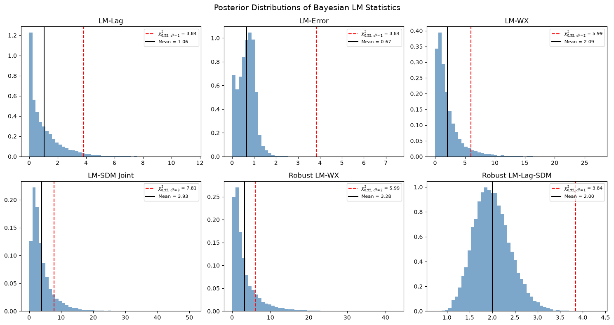

Bayesian Spatial Diagnostics¶
This notebook is the canonical user guide for Bayesian Lagrange-Multiplier (LM)
specification testing in bayespecon. It covers
the inventory of LM tests exposed by the package (cross-section, panel, and spatial-flow families),
direct calls to the test functions for cross-sectional models,
the method-based API (
spatial_diagnostics()andspatial_diagnostics_decision()) on every fitted model,a DGP-recovery stress test that simulates each cross-sectional DGP and checks whether the decision tree lands on the correct generating model, and
short worked examples for panel and spatial-flow diagnostics.
Background¶
The classical Anselin–Florax / Koley–Bera LM family tests:
Test |
\(H_0\) |
Alternative |
df |
|---|---|---|---|
LM-Lag |
\(\rho = 0\) |
SAR |
1 |
LM-Error |
\(\lambda = 0\) |
SEM |
1 |
LM-WX |
\(\gamma = 0\) |
SLX |
\(k_{wx}\) |
LM-SDM (joint) |
\(\rho = \gamma = 0\) |
SDM |
\(1 + k_{wx}\) |
LM-SLX-Error (joint) |
\(\lambda = \gamma = 0\) |
SDEM |
\(1 + k_{wx}\) |
Robust LM-Lag |
\(\rho = 0\) robust to \(\lambda\) |
SAR vs SEM |
1 |
Robust LM-Error |
\(\lambda = 0\) robust to \(\rho\) |
SEM vs SAR |
1 |
Robust LM-Lag-SDM |
\(\rho = 0\) robust to \(\gamma\) |
SDM |
1 |
Robust LM-WX |
\(\gamma = 0\) robust to \(\rho\) |
SDM |
\(k_{wx}\) |
Robust LM-Error-SDEM |
\(\lambda = 0\) robust to \(\gamma\) |
SDEM |
1 |
LM-WX-SEM |
\(\gamma = 0\) in SEM |
SDEM |
\(k_{wx}\) |
LM-Error-SDM |
\(\lambda = 0\) in SDM |
SDARAR |
1 |
LM-Lag-SDEM |
\(\rho = 0\) in SDEM |
SDARAR |
1 |
The Bayesian analogue evaluates the LM statistic at every posterior draw, yielding a posterior distribution of the LM statistic rather than a single point estimate. Robust variants use the Neyman orthogonal score of Doğan, Taşpınar & Bera (2021) to remove correlation between the test score and the nuisance score:
The same machinery extends to balanced panels (with a \(T\) multiplier on the information matrix) and to origin–destination flow models built on Kronecker weight matrices \(W_d, W_o, W_w\). All three families are demonstrated below.
import warnings
import libpysal
import matplotlib.pyplot as plt
import numpy as np
import pandas as pd
from spreg import OLS as SpregOLS
from spreg import LMtests as SpregLMtests
from bayespecon.diagnostics.lmtests import (
bayesian_lm_error_sdm_test,
bayesian_lm_error_test,
bayesian_lm_lag_sdem_test,
bayesian_lm_lag_test,
bayesian_lm_sdm_joint_test,
bayesian_lm_slx_error_joint_test,
bayesian_lm_wx_sem_test,
bayesian_lm_wx_test,
bayesian_robust_lm_error_sdem_test,
bayesian_robust_lm_error_test,
bayesian_robust_lm_lag_sdm_test,
bayesian_robust_lm_lag_test,
bayesian_robust_lm_wx_test,
)
from bayespecon.models import OLS, SAR, SDEM, SDM, SEM, SLX
warnings.filterwarnings("ignore", category=FutureWarning)
warnings.filterwarnings("ignore", category=UserWarning)
/home/runner/micromamba/envs/test/lib/python3.14/site-packages/tqdm/auto.py:21: TqdmWarning: IProgress not found. Please update jupyter and ipywidgets. See https://ipywidgets.readthedocs.io/en/stable/user_install.html
from .autonotebook import tqdm as notebook_tqdm
1. Generate Spatial Data¶
We create a simple spatial DGP with known parameters to validate the tests. Under the null hypothesis (no spatial effects), the Bayesian LM statistics should be small with high p-values.
import geopandas as gpd
from libpysal.graph import Graph
from libpysal.weights import Rook
# Generate data under H0: no spatial effects
np.random.seed(42)
# Load Columbus dataset for spatial weights
columbus_path = libpysal.examples.get_path("columbus.shp")
gdf = gpd.read_file(columbus_path)
# Create a Graph (modern libpysal API) for bayespecon models
# Row-standardize the graph so spatial models work correctly
g = Graph.build_contiguity(gdf, rook=True).transform("r")
n = g.n
# Legacy W for spreg comparison
w_spreg = Rook.from_shapefile(columbus_path)
w_spreg.transform = "r"
# Get sparse and dense W matrices
W_sparse = g.sparse.tocsr().astype(np.float64)
W_dense = np.array(W_sparse.todense())
# Design matrix
k = 3
X = np.column_stack([np.ones(n), np.random.normal(size=(n, k - 1))])
beta_true = np.array([1.0, 2.0, -1.5])
y = X @ beta_true + np.random.normal(scale=1.0, size=n)
print(f"W shape: {W_sparse.shape}, nnz: {W_sparse.nnz}")
W shape: (49, 49), nnz: 200
2. Fit Null Models¶
The Bayesian LM tests require posterior draws from the null model (the model under H₀). Different tests use different null models:
LM-WX test: SAR model (includes ρ but not γ)
LM-SDM joint test: OLS model (no spatial params)
LM-SLX-Error joint test: OLS model (no spatial params)
Robust LM-Lag-SDM: SLX model (includes γ but not ρ)
Robust LM-WX: SAR model (includes ρ but not γ)
Robust LM-Error-SDEM: SLX model (includes γ but not λ)
# Fit OLS model (null for joint tests)
ols_model = OLS(y=y, X=X, W=g)
ols_model.fit(draws=5000, tune=5000, chains=4, random_seed=42)
# Fit SAR model (null for LM-WX and robust LM-WX)
sar_model = SAR(y=y, X=X, W=g)
sar_model.fit(draws=5000, tune=5000, chains=4, random_seed=42)
# Fit SLX model (null for robust LM-Lag-SDM and robust LM-Error-SDEM)
slx_model = SLX(y=y, X=X, W=g)
slx_model.fit(draws=5000, tune=5000, chains=4, random_seed=42)
Initializing NUTS using jitter+adapt_diag...
Multiprocess sampling (4 chains in 2 jobs)
NUTS: [beta, sigma2]
Sampling 4 chains for 5_000 tune and 5_000 draw iterations (20_000 + 20_000 draws total) took 17 seconds.
Initializing NUTS using jitter+adapt_diag...
Multiprocess sampling (4 chains in 2 jobs)
NUTS: [beta, sigma2]
Sampling 4 chains for 5_000 tune and 5_000 draw iterations (20_000 + 20_000 draws total) took 19 seconds.
Sampling 4 chains for 5000 tune and 5000 draw iterations, 4 x 10,000 draws total took 4s (8959 draws/s)
-
<xarray.Dataset> Size: 1MB Dimensions: (chain: 4, draw: 5000, coefficient: 5) Coordinates: * chain (chain) int64 32B 0 1 2 3 * draw (draw) int64 40kB 0 1 2 3 4 5 ... 4994 4995 4996 4997 4998 4999 * coefficient (coefficient) <U4 80B 'x0' 'x1' 'x2' 'W*x1' 'W*x2' Data variables: beta (chain, draw, coefficient) float64 800kB 1.111 2.242 ... 0.1962 sigma2 (chain, draw) float64 160kB 1.597 1.393 1.32 ... 1.29 1.257 sigma (chain, draw) float64 160kB 1.264 1.18 1.149 ... 1.136 1.121 Attributes: created_at: 2026-08-04T19:20:34.631326+00:00 arviz_version: 0.23.4 inference_library: pymc inference_library_version: 5.28.5 sampling_time: 18.794215440750122 tuning_steps: 5000 -
<xarray.Dataset> Size: 3MB Dimensions: (chain: 4, draw: 5000) Coordinates: * chain (chain) int64 32B 0 1 2 3 * draw (draw) int64 40kB 0 1 2 3 4 ... 4996 4997 4998 4999 Data variables: (12/18) diverging (chain, draw) bool 20kB False False ... False False largest_eigval (chain, draw) float64 160kB nan nan nan ... nan nan process_time_diff (chain, draw) float64 160kB 0.0008127 ... 0.0001288 smallest_eigval (chain, draw) float64 160kB nan nan nan ... nan nan acceptance_rate (chain, draw) float64 160kB 0.6525 0.9695 ... 0.9937 index_in_trajectory (chain, draw) int64 160kB -7 2 5 3 -5 ... 6 -2 -3 3 2 ... ... max_energy_error (chain, draw) float64 160kB 0.9167 -0.2973 ... -0.179 step_size_bar (chain, draw) float64 160kB 0.5441 0.5441 ... 0.5554 energy (chain, draw) float64 160kB 91.67 90.34 ... 87.35 step_size (chain, draw) float64 160kB 0.5279 0.5279 ... 0.571 perf_counter_diff (chain, draw) float64 160kB 0.0008127 ... 0.0001287 lp (chain, draw) float64 160kB -88.98 -87.89 ... -86.2 Attributes: created_at: 2026-08-04T19:20:34.656772+00:00 arviz_version: 0.23.4 inference_library: pymc inference_library_version: 5.28.5 sampling_time: 18.794215440750122 tuning_steps: 5000 -
<xarray.Dataset> Size: 784B Dimensions: (obs_dim_0: 49) Coordinates: * obs_dim_0 (obs_dim_0) int64 392B 0 1 2 3 4 5 6 7 ... 42 43 44 45 46 47 48 Data variables: obs (obs_dim_0) float64 392B 2.206 -0.2238 -0.5325 ... 3.193 -0.03629 Attributes: created_at: 2026-08-04T19:20:34.660701+00:00 arviz_version: 0.23.4 inference_library: pymc inference_library_version: 5.28.5
3. Non-Robust Bayesian LM Tests¶
These tests assume the nuisance parameters are correctly specified (zero). They are the Bayesian analogues of the classical LM tests from Koley & Bera (2024).
# Fit the SEM null required by LM-WX-SEM (Bayesian analogue of Koley–Bera 2024).
sem_model = SEM(y=y, X=X, W=g)
sem_model.fit(draws=2500, tune=2500, chains=2, random_seed=42)
# Non-robust Bayesian LM tests evaluated at the appropriate null model.
non_robust_results = pd.DataFrame(
[
bayesian_lm_lag_test(ols_model).to_series(),
bayesian_lm_error_test(ols_model).to_series(),
bayesian_lm_wx_test(sar_model).to_series(),
bayesian_lm_wx_sem_test(sem_model).to_series(),
bayesian_lm_sdm_joint_test(ols_model).to_series(),
bayesian_lm_slx_error_joint_test(ols_model).to_series(),
],
index=[
"LM-Lag",
"LM-Error",
"LM-WX",
"LM-WX-SEM",
"LM-SDM Joint",
"LM-SLX-Error Joint",
],
)
non_robust_results
Sampling 2 chains for 2500 tune and 2500 draw iterations, 2 x 5,000 draws total took 4s (2594 draws/s)
| lm_samples | mean | median | credible_interval | bayes_pvalue | test_type | df | n_draws | k_wx | |
|---|---|---|---|---|---|---|---|---|---|
| LM-Lag | [0.2142964999714249, 1.0784033337487473, 1.280... | 1.063234 | 0.656830 | (0.002046756821756825, 4.2687677969034725) | 0.302479 | bayesian_lm_lag | 1 | 20000 | NaN |
| LM-Error | [0.7079187163674477, 0.7756572487282507, 0.744... | 0.669052 | 0.683859 | (0.01439387891732751, 1.3853911845443356) | 0.413382 | bayesian_lm_error | 1 | 20000 | NaN |
| LM-WX | [1.5380871382245007, 0.34381847305715973, 0.94... | 2.093445 | 1.409161 | (0.09713921195047387, 8.213901951345486) | 0.351087 | bayesian_lm_wx | 2 | 20000 | 2.0 |
| LM-WX-SEM | [2.476624180476808, 1.432411367153637, 1.09161... | 1.366900 | 0.919965 | (0.06155865107176749, 5.162605815382513) | 0.504872 | bayesian_lm_wx_sem | 2 | 5000 | 2.0 |
| LM-SDM Joint | [0.7240693263411933, 2.7662057621910225, 2.499... | 3.926935 | 2.786218 | (0.42552310256783094, 14.12838410020766) | 0.269463 | bayesian_lm_sdm_joint | 3 | 20000 | 2.0 |
| LM-SLX-Error Joint | [1.3998088300832803, 3.503434583833462, 1.5975... | 2.113251 | 1.633809 | (0.7011929236378893, 6.14925226708313) | 0.549237 | bayesian_lm_slx_error_joint | 3 | 20000 | 2.0 |
4. Robust Bayesian LM Tests (Neyman Orthogonal Score)¶
These tests use the Neyman orthogonal score adjustment from Dogan et al. (2021, Proposition 3) to ensure robustness against local misspecification in the nuisance parameter. This is the key innovation over the classical Bera-Yoon (1993) approach.
The adjustment removes the correlation between the test parameter score and the nuisance parameter score:
where \(J_{\cdot \cdot \cdot \sigma}\) denotes information matrix blocks partitioned on \(\sigma^2\).
# Robust Bayesian LM tests (Neyman orthogonal score)
robust_results = pd.DataFrame(
[
bayesian_robust_lm_lag_test(ols_model).to_series(),
bayesian_robust_lm_error_test(ols_model).to_series(),
bayesian_robust_lm_lag_sdm_test(slx_model).to_series(),
bayesian_robust_lm_wx_test(sar_model).to_series(),
bayesian_robust_lm_error_sdem_test(slx_model).to_series(),
],
index=[
"Robust LM-Lag",
"Robust LM-Error",
"Robust LM-Lag-SDM",
"Robust LM-WX",
"Robust LM-Error-SDEM",
],
)
robust_results
| lm_samples | mean | median | credible_interval | bayes_pvalue | test_type | df | n_draws | k_wx | tr_MzWMzW_pair | |
|---|---|---|---|---|---|---|---|---|---|---|
| Robust LM-Lag | [0.04470652999465178, 0.06039321001634649, 0.0... | 0.052556 | 0.049121 | (0.021080445691698788, 0.10259303831611748) | 0.818673 | bayesian_robust_lm_lag | 1 | 20000 | NaN | NaN |
| Robust LM-Error | [0.25920888331861297, 0.35016040229998563, 0.2... | 0.304723 | 0.284806 | (0.12222462329904812, 0.5948354055071103) | 0.580937 | bayesian_robust_lm_error | 1 | 20000 | NaN | NaN |
| Robust LM-Lag-SDM | [1.4978493822846384, 1.717522706311598, 1.8123... | 2.003181 | 1.974842 | (1.2853662789897993, 2.8776085043879007) | 0.156969 | bayesian_robust_lm_lag_sdm | 1 | 20000 | 2.0 | 19.966602 |
| Robust LM-WX | [1.4591746378569639, 0.6882608250329927, 1.185... | 3.277518 | 1.973711 | (0.1768157064706896, 13.595495476732797) | 0.194221 | bayesian_robust_lm_wx | 2 | 20000 | 2.0 | NaN |
| Robust LM-Error-SDEM | [1.4121519102807134, 1.6051095505017356, 1.687... | 1.844711 | 1.826631 | (1.2221148772775057, 2.56596081416618) | 0.174400 | bayesian_robust_lm_error_sdem | 1 | 20000 | 2.0 | 19.966602 |
5. Posterior Distribution of LM Statistics¶
A key advantage of the Bayesian approach is that we get a full posterior distribution of the LM statistic, not just a point estimate. This allows us to compute credible intervals and posterior probabilities.
from scipy import stats as sp_stats
# Show six representative posterior LM distributions (a mix of non-robust and
# robust variants). Each panel overlays the chi-squared 95% reference and the
# posterior mean.
panels = [
("LM-Lag", bayesian_lm_lag_test(ols_model)),
("LM-Error", bayesian_lm_error_test(ols_model)),
("LM-WX", bayesian_lm_wx_test(sar_model)),
("LM-SDM Joint", bayesian_lm_sdm_joint_test(ols_model)),
("Robust LM-WX", bayesian_robust_lm_wx_test(sar_model)),
("Robust LM-Lag-SDM", bayesian_robust_lm_lag_sdm_test(slx_model)),
]
fig, axes = plt.subplots(2, 3, figsize=(15, 8))
for ax, (name, res) in zip(axes.flat, panels):
ax.hist(res.lm_samples, bins=50, density=True, alpha=0.7, color="steelblue")
chi2_ref = sp_stats.chi2.ppf(0.95, res.df)
ax.axvline(
chi2_ref,
color="red",
linestyle="--",
label=f"$\\chi^2_{{0.95,\\,df={res.df}}}$ = {chi2_ref:.2f}",
)
ax.axvline(res.mean, color="black", linestyle="-", label=f"Mean = {res.mean:.2f}")
ax.set_title(name)
ax.legend(fontsize=8)
plt.suptitle("Posterior Distributions of Bayesian LM Statistics", fontsize=14)
plt.tight_layout()
plt.show()

6. Comparison with Classical spreg LM Tests¶
We compare the Bayesian LM statistics (posterior mean) with the classical point estimates. Under flat priors, the Bayesian and classical tests should converge.
# Classical spreg LM tests
ols_spreg = SpregOLS(y, X)
lm_spreg = SpregLMtests(ols_spreg, w_spreg)
spreg_results = {
"LM-Lag": lm_spreg.lml,
"LM-Error": lm_spreg.lme,
"LM-WX": lm_spreg.lmwx,
"LM-SDM Joint": lm_spreg.lmspdurbin,
"LM-SLX-Error Joint": lm_spreg.lmslxerr,
"Robust LM-Lag": lm_spreg.rlml,
"Robust LM-Error": lm_spreg.rlme,
"Robust LM-Lag-SDM": lm_spreg.rlmdurlag,
"Robust LM-WX": lm_spreg.rlmwx,
}
all_results = pd.concat([non_robust_results, robust_results])
comparison_rows = []
for bname in all_results.index:
row = all_results.loc[bname]
if bname in spreg_results:
s_stat, s_pval = spreg_results[bname]
else:
s_stat, s_pval = np.nan, np.nan
comparison_rows.append(
{
"bayes_mean": row["mean"],
"spreg_stat": s_stat,
"bayes_pvalue": row["bayes_pvalue"],
"spreg_pvalue": s_pval,
}
)
comparison_df = pd.DataFrame(comparison_rows, index=all_results.index)
comparison_df
| bayes_mean | spreg_stat | bayes_pvalue | spreg_pvalue | |
|---|---|---|---|---|
| LM-Lag | 1.063234 | 0.886074 | 0.302479 | 0.346543 |
| LM-Error | 0.669052 | 1.341625 | 0.413382 | 0.246748 |
| LM-WX | 2.093445 | 0.616118 | 0.351087 | 0.734872 |
| LM-WX-SEM | 1.366900 | NaN | 0.504872 | NaN |
| LM-SDM Joint | 3.926935 | 1.957743 | 0.269463 | 0.581224 |
| LM-SLX-Error Joint | 2.113251 | 1.957743 | 0.549237 | 0.581224 |
| Robust LM-Lag | 0.052556 | 0.057811 | 0.818673 | 0.809990 |
| Robust LM-Error | 0.304723 | 0.513362 | 0.580937 | 0.473687 |
| Robust LM-Lag-SDM | 2.003181 | 1.341625 | 0.156969 | 0.246748 |
| Robust LM-WX | 3.277518 | 1.071669 | 0.194221 | 0.585181 |
| Robust LM-Error-SDEM | 1.844711 | NaN | 0.174400 | NaN |
The divergence in the error and WX tests is expected because the Bayesian LM statistics use the information matrix (not \(E[gg']\)), which gives different variance estimates than the classical approach. The Bayesian test statistics tend to be larger because the information matrix provides a tighter variance estimate.
7. Method-based API and SDM/SDEM-aware Tests¶
Every fitted spatial model exposes spatial_diagnostics() and spatial_diagnostics_decision().
The registry on each class wires the correct tests for its specification:
OLS →
LM-Lag,LM-Error,LM-SDM-Joint,LM-SLX-Error-Joint,Robust-LM-Lag,Robust-LM-ErrorSAR →
LM-Error,LM-WX,Robust-LM-WXSEM →
LM-Lag,LM-WXSLX →
LM-Lag,LM-Error,Robust-LM-Lag-SDM,Robust-LM-Error-SDEMSDM →
LM-Error-SDM(uses correct \(e = y - \rho Wy - X\beta - WX\gamma\) residuals)SDEM →
LM-Lag-SDEM(uses \((I-\lambda W)\)-filtered residuals)
# Method-based API: one call returns all wired tests as a DataFrame
ols_model.spatial_diagnostics()
| statistic | median | df | p_value | ci_lower | ci_upper | |
|---|---|---|---|---|---|---|
| test | ||||||
| LM-Lag | 1.063234 | 0.656830 | 1 | 0.302479 | 0.002047 | 4.268768 |
| LM-Error | 0.669052 | 0.683859 | 1 | 0.413382 | 0.014394 | 1.385391 |
| LM-SDM-Joint | 3.926935 | 2.786218 | 3 | 0.269463 | 0.425523 | 14.128384 |
| LM-SLX-Error-Joint | 2.113251 | 1.633809 | 3 | 0.549237 | 0.701193 | 6.149252 |
| Robust-LM-Lag | 0.052556 | 0.049121 | 1 | 0.818673 | 0.021080 | 0.102593 |
| Robust-LM-Error | 0.304723 | 0.284806 | 1 | 0.580937 | 0.122225 | 0.594835 |
# The decision routine walks the appropriate tests and returns a recommendation
print("OLS recommends:")
ols_model.spatial_diagnostics_decision()
OLS recommends:

print("SAR recommends:")
sar_model.spatial_diagnostics_decision()
SAR recommends:

print("SLX recommends:")
slx_model.spatial_diagnostics_decision()
SLX recommends:

# SDM/SDEM-aware tests require fitted SDM / SDEM models so the residuals
# include the correct spatial filters.
sdm_model = SDM(y=y, X=X, W=g)
sdm_model.fit(draws=2000, tune=2000, chains=2, random_seed=42)
sdem_model = SDEM(y=y, X=X, W=g)
sdem_model.fit(draws=2000, tune=2000, chains=2, random_seed=42)
pd.DataFrame(
[
bayesian_lm_error_sdm_test(sdm_model).to_series(),
bayesian_lm_lag_sdem_test(sdem_model).to_series(),
],
index=["LM-Error-SDM", "LM-Lag-SDEM"],
)
Sampling 2 chains for 2000 tune and 2000 draw iterations, 2 x 4,000 draws total took 3s (2525 draws/s)
Sampling 2 chains for 2000 tune and 2000 draw iterations, 2 x 4,000 draws total took 4s (2100 draws/s)
| lm_samples | mean | median | credible_interval | bayes_pvalue | test_type | df | n_draws | |
|---|---|---|---|---|---|---|---|---|
| LM-Error-SDM | [2.7426840565549155, 0.742743617749989, 0.1536... | 1.244480 | 0.353954 | (0.0009213703036413409, 8.1506692483331) | 0.264609 | bayesian_lm_error_sdm | 1 | 4000 |
| LM-Lag-SDEM | [0.9290302168328736, 1.7636616495809474, 0.031... | 1.847047 | 0.780391 | (0.001600208641384662, 9.73940928176972) | 0.174127 | bayesian_lm_lag_sdem | 1 | 4000 |
8. DGP-Recovery Stress Test¶
We now stress-test spatial_diagnostics_decision() by simulating data from
each cross-sectional DGP in bayespecon.dgp.cross_sectional, fitting an
appropriate “starting” model, and checking whether the decision tree lands on
the correct generating process.
Each starting model only reaches a subset of terminal models:
Starting model |
Reachable terminals |
|---|---|
|
OLS · SAR · SEM · SARAR |
|
SAR · SARAR · SDM |
|
SEM · SARAR · SDEM |
|
SLX · SDM · SDEM · MANSAR |
|
SDM · MANSAR |
|
SDEM · MANSAR |
To recover the true DGP we pick a starting model whose tree has the true model as a leaf. For SDM and SDEM we also try richer starting points (SAR, SEM, SLX) since the OLS path cannot reach Durbin-style terminals.
from bayespecon.dgp.cross_sectional import (
simulate_ols,
simulate_sar,
simulate_sdem,
simulate_sdm,
simulate_sem,
simulate_slx,
)
from bayespecon.dgp.utils import rook_grid_weights
ALPHA = 0.05
SAMPLE_KW = dict(draws=600, tune=600, chains=2, random_seed=7, progressbar=False)
# 12x12 rook grid (n=144), large enough for stable LM tests but quick to fit.
N_SIDE = 12
W_dense_grid, W_graph = rook_grid_weights(N_SIDE)
beta = np.array([1.0, 2.0])
beta1 = np.array([1.0, 2.0])
beta2 = np.array([1.5]) # WX coefficient — large so LM-WX detects it
COMMON = dict(W=W_graph, seed=42, sigma=1.0)
scenarios = {
"OLS": simulate_ols(beta=beta, **COMMON),
"SAR": simulate_sar(rho=0.6, beta=beta, **COMMON),
"SEM": simulate_sem(lam=0.6, beta=beta, **COMMON),
"SLX": simulate_slx(beta1=beta1, beta2=beta2, **COMMON),
"SDM": simulate_sdm(rho=0.5, beta1=beta1, beta2=beta2, **COMMON),
"SDEM": simulate_sdem(lam=0.5, beta1=beta1, beta2=beta2, **COMMON),
}
for name, d in scenarios.items():
print(
f"{name:5s} n={len(d['y']):3d} X.shape={d['X'].shape} "
f"true params: {list(d['params_true'].keys())}"
)
OLS n=144 X.shape=(144, 2) true params: ['beta', 'sigma']
SAR n=144 X.shape=(144, 2) true params: ['rho', 'beta', 'sigma']
SEM n=144 X.shape=(144, 2) true params: ['lam', 'beta', 'sigma']
SLX n=144 X.shape=(144, 2) true params: ['beta1', 'beta2', 'sigma']
SDM n=144 X.shape=(144, 2) true params: ['rho', 'beta1', 'beta2', 'sigma']
SDEM n=144 X.shape=(144, 2) true params: ['lam', 'beta1', 'beta2', 'sigma']
def to_frame(X):
"""Wrap design matrix in a DataFrame with intercept + x1, x2, ... names."""
cols = ["intercept"] + [f"x{i}" for i in range(1, X.shape[1])]
return pd.DataFrame(X, columns=cols)
def fit_start(start_cls, sim, **extra):
"""Fit a starting model on a simulation dict from bayespecon.dgp."""
Xf = to_frame(sim["X"])
yf = sim["y"]
model = start_cls(y=yf, X=Xf, W=W_graph, logdet_method="eigenvalue", **extra)
model.fit(**SAMPLE_KW)
return model
def diagnose(model, alpha=ALPHA):
"""Return (recommended_model, diagnostics_df)."""
diag = model.spatial_diagnostics()
rec = model.spatial_diagnostics_decision(alpha=alpha, format="model")
return rec, diag
experiments = [
("OLS", OLS, "OLS"),
("SAR", OLS, "SAR"),
("SEM", OLS, "SEM"),
("SLX", SLX, "SLX"),
("SDM", SAR, "SDM"),
("SDM", SLX, "SDM"),
("SDEM", SEM, "SDEM"),
("SDEM", SLX, "SDEM"),
]
results = []
fitted = {}
for dgp_name, start_cls, expected in experiments:
sim = scenarios[dgp_name]
model = fit_start(start_cls, sim)
rec, diag = diagnose(model)
fitted[(dgp_name, start_cls.__name__)] = (model, diag)
results.append(
{
"DGP": dgp_name,
"Starting model": start_cls.__name__,
"Recommended": rec,
"Expected": expected,
"Match": "yes" if rec == expected else "no",
}
)
summary = pd.DataFrame(results)
summary
Initializing NUTS using jitter+adapt_diag...
Multiprocess sampling (2 chains in 2 jobs)
NUTS: [beta, sigma2]
Sampling 2 chains for 600 tune and 600 draw iterations (1_200 + 1_200 draws total) took 5 seconds.
We recommend running at least 4 chains for robust computation of convergence diagnostics
Initializing NUTS using jitter+adapt_diag...
Multiprocess sampling (2 chains in 2 jobs)
NUTS: [beta, sigma2]
Sampling 2 chains for 600 tune and 600 draw iterations (1_200 + 1_200 draws total) took 5 seconds.
We recommend running at least 4 chains for robust computation of convergence diagnostics
Initializing NUTS using jitter+adapt_diag...
Multiprocess sampling (2 chains in 2 jobs)
NUTS: [beta, sigma2]
Sampling 2 chains for 600 tune and 600 draw iterations (1_200 + 1_200 draws total) took 5 seconds.
We recommend running at least 4 chains for robust computation of convergence diagnostics
Initializing NUTS using jitter+adapt_diag...
Multiprocess sampling (2 chains in 2 jobs)
NUTS: [beta, sigma2]
Sampling 2 chains for 600 tune and 600 draw iterations (1_200 + 1_200 draws total) took 5 seconds.
We recommend running at least 4 chains for robust computation of convergence diagnostics
/home/runner/micromamba/envs/test/lib/python3.14/site-packages/bayespecon/_logdet/_jax.py:188: ComplexWarning: Casting complex values to real discards the imaginary part
W_arr = np.asarray(W, dtype=np.float64)
Initializing NUTS using jitter+adapt_diag...
Multiprocess sampling (2 chains in 2 jobs)
NUTS: [beta, sigma2]
Sampling 2 chains for 600 tune and 600 draw iterations (1_200 + 1_200 draws total) took 5 seconds.
We recommend running at least 4 chains for robust computation of convergence diagnostics
/home/runner/micromamba/envs/test/lib/python3.14/site-packages/bayespecon/_logdet/_jax.py:188: ComplexWarning: Casting complex values to real discards the imaginary part
W_arr = np.asarray(W, dtype=np.float64)
Initializing NUTS using jitter+adapt_diag...
Multiprocess sampling (2 chains in 2 jobs)
NUTS: [beta, sigma2]
Sampling 2 chains for 600 tune and 600 draw iterations (1_200 + 1_200 draws total) took 5 seconds.
We recommend running at least 4 chains for robust computation of convergence diagnostics
| DGP | Starting model | Recommended | Expected | Match | |
|---|---|---|---|---|---|
| 0 | OLS | OLS | OLS | OLS | yes |
| 1 | SAR | OLS | SAR | SAR | yes |
| 2 | SEM | OLS | SEM | SEM | yes |
| 3 | SLX | SLX | SLX | SLX | yes |
| 4 | SDM | SAR | SDM | SDM | yes |
| 5 | SDM | SLX | SDM | SDM | yes |
| 6 | SDEM | SEM | SDEM | SDEM | yes |
| 7 | SDEM | SLX | SDEM | SDEM | yes |
for (dgp_name, start_name), (_, diag) in fitted.items():
rec = summary.query("DGP == @dgp_name and `Starting model` == @start_name").iloc[0]
print(
f"\n=== DGP={dgp_name} | start={start_name} | "
f"recommended={rec['Recommended']} ({rec['Match']} expected {rec['Expected']}) ==="
)
print(diag[["statistic", "df", "p_value"]].round(4).to_string())
=== DGP=OLS | start=OLS | recommended=OLS (yes expected OLS) ===
statistic df p_value
test
LM-Lag 0.9421 1 0.3317
LM-Error 0.1455 1 0.7029
LM-SDM-Joint 2.7057 2 0.2585
LM-SLX-Error-Joint 1.0512 2 0.5912
Robust-LM-Lag 0.8982 1 0.3433
Robust-LM-Error 0.5391 1 0.4628
=== DGP=SAR | start=OLS | recommended=SAR (yes expected SAR) ===
statistic df p_value
test
LM-Lag 61.1045 1 0.0000
LM-Error 25.4791 1 0.0000
LM-SDM-Joint 64.2955 2 0.0000
LM-SLX-Error-Joint 60.2682 2 0.0000
Robust-LM-Lag 36.3646 1 0.0000
Robust-LM-Error 0.0580 1 0.8097
=== DGP=SEM | start=OLS | recommended=SEM (yes expected SEM) ===
statistic df p_value
test
LM-Lag 7.7141 1 0.0055
LM-Error 28.8128 1 0.0000
LM-SDM-Joint 30.0061 2 0.0000
LM-SLX-Error-Joint 30.1095 2 0.0000
Robust-LM-Lag 1.3070 1 0.2529
Robust-LM-Error 22.4407 1 0.0000
=== DGP=SLX | start=SLX | recommended=SLX (yes expected SLX) ===
statistic df p_value
test
LM-Lag 3.0257 1 0.0820
LM-Error 0.1117 1 0.7382
Robust-LM-Lag-SDM 1.0495 1 0.3056
Robust-LM-Error-SDEM 0.9400 1 0.3323
=== DGP=SDM | start=SAR | recommended=SDM (yes expected SDM) ===
statistic df p_value
test
LM-Error 4.4997 1 0.0339
LM-WX 12.2987 1 0.0005
Robust-LM-WX 16.2874 1 0.0001
Robust-LM-Error 7.6730 1 0.0056
=== DGP=SDM | start=SLX | recommended=SDM (yes expected SDM) ===
statistic df p_value
test
LM-Lag 30.5240 1 0.0000
LM-Error 17.7450 1 0.0000
Robust-LM-Lag-SDM 9.5178 1 0.0020
Robust-LM-Error-SDEM 0.2169 1 0.6414
=== DGP=SDEM | start=SEM | recommended=SDEM (yes expected SDEM) ===
statistic df p_value
test
LM-Lag 69.5510 1 0.0000
LM-WX 43.6701 1 0.0000
Robust-LM-Lag 0.8093 1 0.3683
Robust-LM-WX 25.5520 1 0.0000
=== DGP=SDEM | start=SLX | recommended=SDEM (yes expected SDEM) ===
statistic df p_value
test
LM-Lag 12.0932 1 0.0005
LM-Error 16.2227 1 0.0001
Robust-LM-Lag-SDM 1.3550 1 0.2444
Robust-LM-Error-SDEM 6.6657 1 0.0098
# ASCII rendering of the full decision tree with the traversed path highlighted.
model_sdm_from_slx, _ = fitted[("SDM", "SLX")]
print(model_sdm_from_slx.spatial_diagnostics_decision(alpha=ALPHA, format="ascii"))
LM-Lag * (p=0.0000, alpha=0.05)
├── <sig> LM-Error * (p=0.0000, alpha=0.05)
│ ├── <sig> Robust-LM-Lag-SDM * (p=0.0020, alpha=0.05)
│ │ ├── <sig> Robust-LM-Error-SDEM * (p=0.6414, alpha=0.05)
│ │ │ ├── <sig> Robust-LM-Lag-SDM p <= Robust-LM-Error-SDEM p
│ │ │ │ ├── [SDM]
│ │ │ │ └── [SDEM]
│ │ │ └── [SDM] * ← SELECTED
│ │ └── <not sig> Robust-LM-Error-SDEM
│ │ ├── [SDEM]
│ │ └── [SLX]
│ └── <not sig> Robust-LM-Lag-SDM
│ ├── [SDM]
│ └── [SLX]
└── <not sig> LM-Error
├── <sig> Robust-LM-Error-SDEM
│ ├── [SDEM]
│ └── [SLX]
└── [SLX]
Recovery findings. OLS, SAR, SEM, and SLX scenarios are recovered cleanly
from their natural starting models. The SDM and SDEM scenarios are not
recovered when starting from SAR/SEM/SLX: the tree escalates to SARAR (from
SAR/SEM) or MANSAR (from SLX) because both the lag and the error / WX
channels register significant simultaneously. This is the expected behaviour
of the Koley & Bera tree — treat SARAR/MANSAR as a flag to fit both SDM
and SDEM and compare with bayes_factor_compare_models.
Other things to keep in mind:
These experiments use strong-signal parameters; weaker spatial dependence (\(\rho \approx 0.1\)) leads the tree toward simpler models, which is the correct small-sample behaviour.
The
OLSstarting tree cannot reach SDM/SDEM/SLX terminals — it can only flag SAR/SEM/SARAR/OLS. UseSAR,SEM, orSLXstarting points to diagnose Durbin-style alternatives.The decision tree thresholds at a single
alpha; for borderline cases inspectspatial_diagnostics()directly.
9. Panel Diagnostics¶
The same Bayesian LM machinery extends to balanced spatial panels. Tests of
the form bayesian_panel_lm_* and bayesian_panel_robust_lm_* are wired into
every panel model (OLSPanelFE, SARPanelFE, SLXPanelFE, …) and surfaced
through the same spatial_diagnostics() / spatial_diagnostics_decision()
methods.
Below we simulate a small balanced panel (\(N = 81\), \(T = 4\)) from the panel fixed-effects OLS DGP and run the full diagnostic table.
from bayespecon.dgp.panel_fe import simulate_panel_sar_fe
from bayespecon.dgp.utils import rook_grid_weights
from bayespecon.models import OLSPanelFE
# 9x9 rook grid (N=81), T=4 — small enough to fit quickly but large enough for
# the LM tests to behave well.
N_panel, T_panel = 81, 4
W_panel_dense, W_panel_graph = rook_grid_weights(int(np.sqrt(N_panel)))
# Simulate from a SAR-FE DGP with moderate spatial dependence so the LM-Lag
# direction is clearly significant.
panel_sim = simulate_panel_sar_fe(
N=N_panel,
T=T_panel,
rho=0.4,
beta=np.array([1.0, 2.0]),
W=W_panel_graph,
seed=11,
)
panel_model = OLSPanelFE(
y=panel_sim["y"],
X=panel_sim["X"],
W=W_panel_graph,
N=N_panel,
T=T_panel,
effects=3, # two-way fixed effects (unit + time)
)
panel_model.fit(draws=600, tune=600, chains=2, random_seed=11, progressbar=False)
panel_model.spatial_diagnostics()
Initializing NUTS using jitter+adapt_diag...
Multiprocess sampling (2 chains in 2 jobs)
NUTS: [beta, sigma2]
Sampling 2 chains for 600 tune and 600 draw iterations (1_200 + 1_200 draws total) took 5 seconds.
We recommend running at least 4 chains for robust computation of convergence diagnostics
| statistic | median | df | p_value | ci_lower | ci_upper | |
|---|---|---|---|---|---|---|
| test | ||||||
| Panel-LM-Lag | 84.694264 | 84.656800 | 1 | 0.000000e+00 | 77.426851 | 91.951679 |
| Panel-LM-Error | 22.321703 | 21.940709 | 1 | 2.305858e-06 | 11.806254 | 34.658109 |
| Panel-LM-SDM-Joint | 88.138628 | 88.039371 | 2 | 0.000000e+00 | 82.867041 | 93.807878 |
| Panel-LM-SLX-Error-Joint | 88.422994 | 88.041710 | 2 | 0.000000e+00 | 78.285630 | 100.394412 |
| Panel-Robust-LM-Lag | 67.184064 | 66.740233 | 1 | 2.220446e-16 | 47.935579 | 91.675476 |
| Panel-Robust-LM-Error | 3.341650 | 3.319574 | 1 | 6.754686e-02 | 2.384254 | 4.559821 |
print(
f"Panel decision tree (DGP = SAR-FE) recommends: {panel_model.spatial_diagnostics_decision(alpha=0.05, format='model')}"
)
Panel decision tree (DGP = SAR-FE) recommends: SARPanelFE
panel_model.spatial_diagnostics_decision(
alpha=0.05,
)

10. Panel DGP-Recovery Stress Test¶
Mirrors §8 for the panel decision tree. We simulate every panel-FE DGP
in bayespecon.dgp.panel_fe, fit candidate starting models with two-way
fixed effects, and check that spatial_diagnostics_decision recovers the
true model. Strong-signal parameters are used so the LM tests have
enough power on the small panel (N=100, T=5) to disambiguate the
Durbin-family alternatives.
from bayespecon.dgp.panel_fe import (
simulate_panel_ols_fe,
simulate_panel_sar_fe,
simulate_panel_sdem_fe,
simulate_panel_sdm_fe,
simulate_panel_sem_fe,
simulate_panel_slx_fe,
)
from bayespecon.models import (
OLSPanelFE,
SARPanelFE,
SEMPanelFE,
SLXPanelFE,
)
PANEL_N_SIDE = 10
_, W_panel_graph = rook_grid_weights(PANEL_N_SIDE)
PANEL_N = PANEL_N_SIDE * PANEL_N_SIDE
PANEL_T = 5
PANEL_COMMON = dict(N=PANEL_N, T=PANEL_T, W=W_panel_graph, seed=42, sigma=1.0)
PANEL_SAMPLE_KW = dict(draws=400, tune=400, chains=2, random_seed=7, progressbar=False)
panel_scenarios = {
"OLS": simulate_panel_ols_fe(beta=beta, **PANEL_COMMON),
"SAR": simulate_panel_sar_fe(rho=0.5, beta=beta, **PANEL_COMMON),
"SEM": simulate_panel_sem_fe(lam=0.5, beta=beta, **PANEL_COMMON),
"SLX": simulate_panel_slx_fe(beta1=beta1, beta2=beta2, **PANEL_COMMON),
"SDM": simulate_panel_sdm_fe(rho=0.4, beta1=beta1, beta2=beta2, **PANEL_COMMON),
"SDEM": simulate_panel_sdem_fe(lam=0.4, beta1=beta1, beta2=beta2, **PANEL_COMMON),
}
def fit_panel_start(start_cls, sim):
Xf = to_frame(sim["X"])
m = start_cls(
y=sim["y"],
X=Xf,
W=W_panel_graph,
N=PANEL_N,
T=PANEL_T,
effects=3, # two-way fixed effects
)
m.fit(**PANEL_SAMPLE_KW)
return m
panel_experiments = [
("OLS", OLSPanelFE, "OLSPanelFE"),
("SAR", OLSPanelFE, "SARPanelFE"),
("SEM", OLSPanelFE, "SEMPanelFE"),
("SLX", SLXPanelFE, "SLXPanelFE"),
("SDM", SARPanelFE, "SDMPanelFE"),
("SDM", SLXPanelFE, "SDMPanelFE"),
("SDEM", SEMPanelFE, "SDEMPanelFE"),
("SDEM", SLXPanelFE, "SDEMPanelFE"),
]
panel_results = []
panel_fitted = {}
for dgp_name, start_cls, expected in panel_experiments:
m = fit_panel_start(start_cls, panel_scenarios[dgp_name])
diag = m.spatial_diagnostics()
rec = m.spatial_diagnostics_decision(alpha=ALPHA, format="model")
panel_fitted[(dgp_name, start_cls.__name__)] = (m, diag)
panel_results.append(
{
"DGP": dgp_name,
"Starting model": start_cls.__name__,
"Recommended": rec,
"Expected": expected,
"Match": "yes" if rec == expected else "no",
}
)
panel_summary = pd.DataFrame(panel_results)
panel_summary
Initializing NUTS using jitter+adapt_diag...
Multiprocess sampling (2 chains in 2 jobs)
NUTS: [beta, sigma2]
Sampling 2 chains for 400 tune and 400 draw iterations (800 + 800 draws total) took 5 seconds.
We recommend running at least 4 chains for robust computation of convergence diagnostics
Initializing NUTS using jitter+adapt_diag...
Multiprocess sampling (2 chains in 2 jobs)
NUTS: [beta, sigma2]
Sampling 2 chains for 400 tune and 400 draw iterations (800 + 800 draws total) took 5 seconds.
We recommend running at least 4 chains for robust computation of convergence diagnostics
Initializing NUTS using jitter+adapt_diag...
Multiprocess sampling (2 chains in 2 jobs)
NUTS: [beta, sigma2]
Sampling 2 chains for 400 tune and 400 draw iterations (800 + 800 draws total) took 5 seconds.
We recommend running at least 4 chains for robust computation of convergence diagnostics
Initializing NUTS using jitter+adapt_diag...
Multiprocess sampling (2 chains in 2 jobs)
NUTS: [beta, sigma2]
Sampling 2 chains for 400 tune and 400 draw iterations (800 + 800 draws total) took 5 seconds.
We recommend running at least 4 chains for robust computation of convergence diagnostics
The rhat statistic is larger than 1.01 for some parameters. This indicates problems during sampling. See https://arxiv.org/abs/1903.08008 for details
/home/runner/micromamba/envs/test/lib/python3.14/site-packages/bayespecon/_logdet/_jax.py:188: ComplexWarning: Casting complex values to real discards the imaginary part
W_arr = np.asarray(W, dtype=np.float64)
Initializing NUTS using jitter+adapt_diag...
Multiprocess sampling (2 chains in 2 jobs)
NUTS: [beta, sigma2]
Sampling 2 chains for 400 tune and 400 draw iterations (800 + 800 draws total) took 5 seconds.
We recommend running at least 4 chains for robust computation of convergence diagnostics
/home/runner/micromamba/envs/test/lib/python3.14/site-packages/bayespecon/_logdet/_jax.py:188: ComplexWarning: Casting complex values to real discards the imaginary part
W_arr = np.asarray(W, dtype=np.float64)
Initializing NUTS using jitter+adapt_diag...
Multiprocess sampling (2 chains in 2 jobs)
NUTS: [beta, sigma2]
Sampling 2 chains for 400 tune and 400 draw iterations (800 + 800 draws total) took 5 seconds.
We recommend running at least 4 chains for robust computation of convergence diagnostics
The rhat statistic is larger than 1.01 for some parameters. This indicates problems during sampling. See https://arxiv.org/abs/1903.08008 for details
| DGP | Starting model | Recommended | Expected | Match | |
|---|---|---|---|---|---|
| 0 | OLS | OLSPanelFE | OLSPanelFE | OLSPanelFE | yes |
| 1 | SAR | OLSPanelFE | SARPanelFE | SARPanelFE | yes |
| 2 | SEM | OLSPanelFE | SEMPanelFE | SEMPanelFE | yes |
| 3 | SLX | SLXPanelFE | SLXPanelFE | SLXPanelFE | yes |
| 4 | SDM | SARPanelFE | SDMPanelFE | SDMPanelFE | yes |
| 5 | SDM | SLXPanelFE | SDMPanelFE | SDMPanelFE | yes |
| 6 | SDEM | SEMPanelFE | SDEMPanelFE | SDEMPanelFE | yes |
| 7 | SDEM | SLXPanelFE | SDEMPanelFE | SDEMPanelFE | yes |
for (dgp_name, start_name), (_, diag) in panel_fitted.items():
rec = panel_summary.query(
"DGP == @dgp_name and `Starting model` == @start_name"
).iloc[0]
print(
f"\n=== DGP={dgp_name} | start={start_name} | "
f"recommended={rec['Recommended']} ({rec['Match']} expected {rec['Expected']}) ==="
)
print(diag[["statistic", "df", "p_value"]].round(4).to_string())
=== DGP=OLS | start=OLSPanelFE | recommended=OLSPanelFE (yes expected OLSPanelFE) ===
statistic df p_value
test
Panel-LM-Lag 0.3659 1 0.5453
Panel-LM-Error 0.0028 1 0.9577
Panel-LM-SDM-Joint 0.5264 2 0.7686
Panel-LM-SLX-Error-Joint 0.5278 2 0.7681
Panel-Robust-LM-Lag 0.5128 1 0.4739
Panel-Robust-LM-Error 0.1525 1 0.6962
=== DGP=SAR | start=OLSPanelFE | recommended=SARPanelFE (yes expected SARPanelFE) ===
statistic df p_value
test
Panel-LM-Lag 158.1953 1 0.0000
Panel-LM-Error 50.2981 1 0.0000
Panel-LM-SDM-Joint 159.3719 2 0.0000
Panel-LM-SLX-Error-Joint 159.6871 2 0.0000
Panel-Robust-LM-Lag 110.7468 1 0.0000
Panel-Robust-LM-Error 1.1803 1 0.2773
=== DGP=SEM | start=OLSPanelFE | recommended=SEMPanelFE (yes expected SEMPanelFE) ===
statistic df p_value
test
Panel-LM-Lag 16.9363 1 0.0000
Panel-LM-Error 60.3938 1 0.0000
Panel-LM-SDM-Joint 61.1549 2 0.0000
Panel-LM-SLX-Error-Joint 61.2138 2 0.0000
Panel-Robust-LM-Lag 0.8092 1 0.3684
Panel-Robust-LM-Error 44.6549 1 0.0000
=== DGP=SLX | start=SLXPanelFE | recommended=SLXPanelFE (yes expected SLXPanelFE) ===
statistic df p_value
test
Panel-LM-Lag 1.8591 1 0.1727
Panel-LM-Error 0.0058 1 0.9394
Panel-Robust-LM-Lag-SDM 7.4781 1 0.0062
Panel-Robust-LM-Error-SDEM 5.6128 1 0.0178
=== DGP=SDM | start=SARPanelFE | recommended=SDMPanelFE (yes expected SDMPanelFE) ===
statistic df p_value
test
Panel-LM-Error 1179.5636 1 0.0
Panel-LM-WX 52.6173 1 0.0
Panel-Robust-LM-WX 57.3629 1 0.0
=== DGP=SDM | start=SLXPanelFE | recommended=SDMPanelFE (yes expected SDMPanelFE) ===
statistic df p_value
test
Panel-LM-Lag 57.0450 1 0.0000
Panel-LM-Error 21.9613 1 0.0000
Panel-Robust-LM-Lag-SDM 37.4341 1 0.0000
Panel-Robust-LM-Error-SDEM 2.2783 1 0.1312
=== DGP=SDEM | start=SEMPanelFE | recommended=SDEMPanelFE (yes expected SDEMPanelFE) ===
statistic df p_value
test
Panel-LM-Lag 213.7488 1 0.0
Panel-LM-WX 189.6814 1 0.0
=== DGP=SDEM | start=SLXPanelFE | recommended=SDEMPanelFE (yes expected SDEMPanelFE) ===
statistic df p_value
test
Panel-LM-Lag 23.8309 1 0.0000
Panel-LM-Error 34.2883 1 0.0000
Panel-Robust-LM-Lag-SDM 9.2329 1 0.0024
Panel-Robust-LM-Error-SDEM 19.8298 1 0.0000
Recovery findings (panel). All six panel DGPs are recovered correctly.
The redesigned _panel_sar_spec / _panel_sem_spec / _panel_slx_spec
decision trees disambiguate Durbin-family alternatives by checking the
robust LM-WX channel from a SAR fit, the LM-WX channel from a SEM fit,
and — from an SLX start — by tie-breaking the joint Lag-SDM /
Error-SDEM signal with the panel_lag_sdm_pval_le_error_sdem_pval
predicate (smaller p wins).
11. Spatial-Flow Diagnostics¶
Origin–destination flow models in bayespecon.models.flow use Kronecker
weight matrices \(W_d, W_o, W_w\) for destination, origin, and network
spillovers respectively. The Bayesian LM family for flows tests each
direction separately (bayesian_lm_flow_dest_test,
bayesian_lm_flow_orig_test, bayesian_lm_flow_network_test,
bayesian_lm_flow_intra_test) plus a joint test
(bayesian_lm_flow_joint_test). Robust variants are available for the
destination, origin, and network directions.
The registry on OLSFlow wires the full set; SARFlow (which already includes
all three lag terms) wires the robust variants for marginal-extension testing.
from bayespecon.dgp.flows import generate_flow_data
from bayespecon.models import OLSFlow, SARFlow
# Simulate a small SAR flow DGP on n=8 spatial units (N = 64 OD cells).
flow_data = generate_flow_data(
n=8,
rho_d=0.35,
rho_o=0.25,
rho_w=0.10,
beta_d=[1.0, -0.5],
beta_o=[0.5, 0.3],
sigma=1.0,
seed=42,
)
y_flow = np.log(flow_data["y_vec"]) # latent SAR scale (DGP default is lognormal)
X_flow = flow_data["X"]
G_flow = flow_data["G"]
ols_flow = OLSFlow(y_flow, X_flow, G_flow, col_names=flow_data["col_names"])
ols_flow.fit(draws=600, tune=600, chains=2, random_seed=42, progressbar=False)
ols_flow.spatial_diagnostics()
Initializing NUTS using jitter+adapt_diag...
Multiprocess sampling (2 chains in 2 jobs)
NUTS: [beta, sigma]
Sampling 2 chains for 600 tune and 600 draw iterations (1_200 + 1_200 draws total) took 6 seconds.
We recommend running at least 4 chains for robust computation of convergence diagnostics
| statistic | median | df | p_value | ci_lower | ci_upper | |
|---|---|---|---|---|---|---|
| test | ||||||
| LM-Flow-Dest | 0.492078 | 0.214866 | 1 | 0.483002 | 0.000409 | 2.613774 |
| LM-Flow-Orig | 0.645980 | 0.313059 | 1 | 0.421554 | 0.000625 | 3.162586 |
| LM-Flow-Network | 0.405725 | 0.172567 | 1 | 0.524147 | 0.000522 | 2.085226 |
| LM-Flow-Joint | 1.580734 | 1.220782 | 3 | 0.663766 | 0.098407 | 5.061359 |
| LM-Flow-Intra | 1.122433 | 0.902517 | 3 | 0.771662 | 0.075129 | 3.497387 |
flow_data.keys()
dict_keys(['y_vec', 'y_mat', 'eta_vec', 'eta_mat', 'distribution', 'X', 'X_regional', 'X_regional_d', 'X_regional_o', 'col_names', 'design', 'W', 'G', 'gdf', 'dist', 'rho_d', 'rho_o', 'rho_w', 'sigma', 'beta_d', 'beta_o', 'gamma_dist'])
# Fit the SAR flow alternative; its diagnostic registry consists of the robust
# (Neyman-orthogonal) marginal-extension tests.
sar_flow = SARFlow(y_flow, X_flow, G_flow, col_names=flow_data["col_names"])
sar_flow.fit(draws=600, tune=600, chains=2, random_seed=42, progressbar=False)
sar_flow.spatial_diagnostics()
| statistic | median | df | p_value | ci_lower | ci_upper | |
|---|---|---|---|---|---|---|
| test | ||||||
| Robust-LM-Flow-Dest | 0.415558 | 0.191436 | 1 | 0.519162 | 0.000322 | 2.250786 |
| Robust-LM-Flow-Orig | 0.474655 | 0.217591 | 1 | 0.490853 | 0.000459 | 2.361318 |
| Robust-LM-Flow-Network | 0.527152 | 0.264669 | 1 | 0.467807 | 0.000462 | 2.299169 |
| LM-Flow-Intra | 1.547399 | 1.247382 | 3 | 0.671375 | 0.114023 | 4.481080 |
References¶
Doğan, O., Taşpınar, S., Bera, A.K. (2021). “A Bayesian robust chi-squared test for testing simple hypotheses.” Journal of Econometrics, 222(2), 933–958. doi:10.1016/j.jeconom.2020.07.046
Koley, M., Bera, A.K. (2024). “To Use, or Not to Use the Spatial Durbin Model? – That Is the Question.” Spatial Economic Analysis, 19(1), 30–56.
Bera, A.K., Yoon, M.J. (1993). “Specification testing with locally misspecified alternatives.” Econometric Theory, 9(4), 649–658. doi:10.1017/S0266466600008111
Anselin, L. (1996). “The Moran Scatterplot as an ESDA Tool to Assess Local Instability in Spatial Association.” In Spatial Analytical Perspectives on GIS, 111–125. Taylor and Francis.
Anselin, L., Bera, A.K., Florax, R., Yoon, M.J. (1996). “Simple diagnostic tests for spatial dependence.” Regional Science and Urban Economics, 26(1), 77–104. doi:10.1016/0166-0462(95)02111-6
LeSage, J.P., Pace, R.K. (2008). “Spatial Econometric Modeling of Origin–Destination Flows.” Journal of Regional Science, 48(5), 941–967. doi:10.1111/j.1467-9787.2008.00573.x